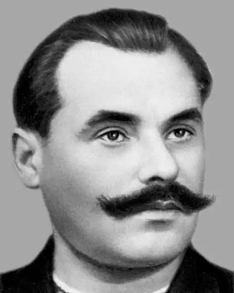

Євген Федорович Бандуренко (справжнє прізвище Бондаренко) народився 23 січня 1919 р. в Києві в сім'ї шевця.
По закінченні середньої школи, у 1937 році поступив на філологічний факультет Київського університету, звідки у 1939 році був призваний в армію.
Учасник Другої Світової війни. Нагороджений орденом Червоної Зірки та медалями. Після демобілізації жив в Одесі. Друкуватися почав 1940 року. Член СП СРСР з 1946 року. У 1946—1954 роках очолював Одеську письменницьку організацію. На початку своєї творчості Євген Бандуренко був відомий як автор ліричних та ліро-епічних віршів, згодом частіше виступав і у сатирико-гумористичних жанрах. Помер 16 березня 1972 року в Одесі.